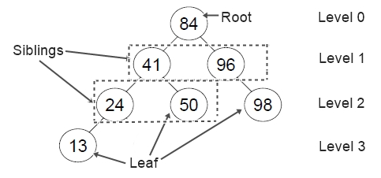
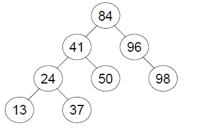
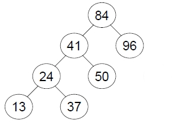
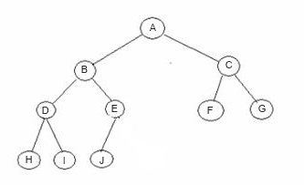
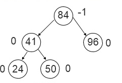

Tree:
A tree is a non-linear data structure, that represents data in a hierarchical manner.
Every tree has a node called the root.Each node can have 1 or more nodes as children.
Terminology:
Edge:The connecting link between any two nodes is called as edge. In a tree with 'n' number of nodes there are maximum of 'n-1' number of edges.
Path:The sequence of Nodes and Edges from one node to another node is called as Path between that two Nodes.
Root:A node that has no parent is called root.
Parent Node:The node which is predecessor of any node is called a Parent Node.
Child Node:The node which is descendant of any node is called a Child Node
Siblings:Nodes with comon parent are called siblings
Leaf/External node:A node that has no children is called a leaf.
Internal Node:A node with one or more children is called internal node.e.g in the fig below 81,41,96,24 are internal nodes
Level:level of any node is its distance from the root.
Degree:The degree of a node is the no of children's of that node.e.g in the fig below the degree of node 41 is 2 ,96 is 1 e.t.c
Height:The total number of edges from leaf node to a particular node in the longest path is called as Height of that Node e.g in the fig below height of the node 41 is 2 e.t.c.
Depth:The total number of edges from root node to a particular node is called as Depth of that Node e.g in the fig below depth of the node 98 is 2,50 is 2,13 is 3.
Subtree:Any part of the tree which has the properties of the tree is known as subtree of the tree.
Forest:Collection of trees is called Forest.

Binary Tree:A tree where each node can have no more than two children's is called binary tree

Full Binary Tree:A binary tree in which each node has exactly zero or two children is called a full binary tree

Complete Binary Tree:A complete binary tree is a tree, which is completely filled, with the possible exception of the bottom level, which is filled from left to right.

Binary Search Tree:A binary search tree (BST) is a binary tree
such that
All nodes to the left of any node have data
values less than that node
All nodes to the right of any node have data
values greater than that node

AVL Tree:
An AVL (Adelson-Velskii and Landis) tree is a binary search tree in which the height of the left and right
subtree of the root differ by at most 1 and in which the left and right subtrees
are again AVL trees. With each node of an AVL tree is associated with a
balancing factor,
BalanceFactor(T) of a node T=
height(T.left) - height(T.right)
The balancing factor of every node should be 1 or 0 or -1.

Applications of trees
It is used in File Compression
It is used in Data Storage e.t.c.